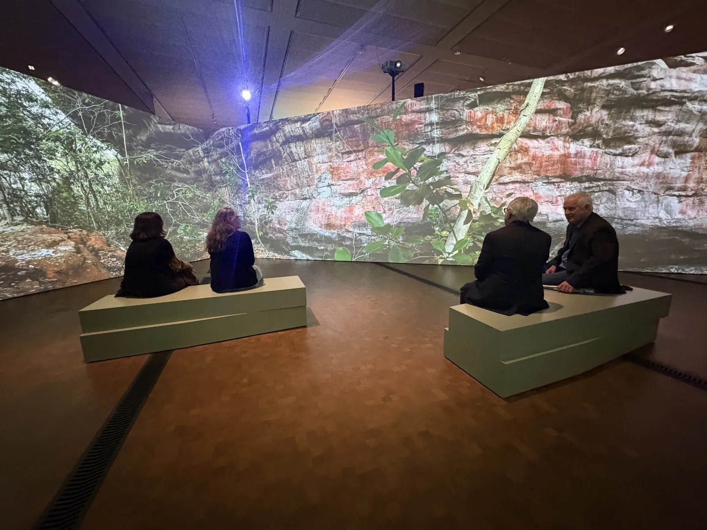
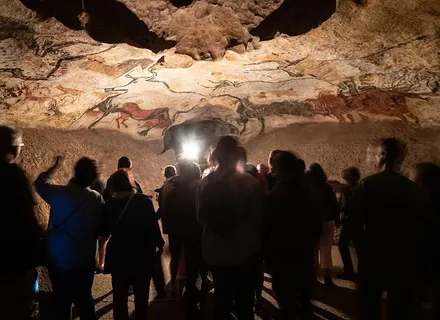
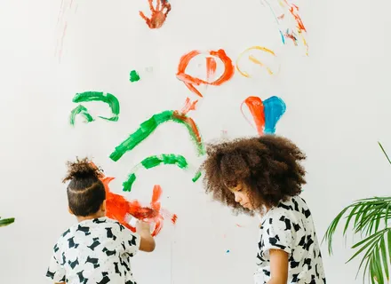
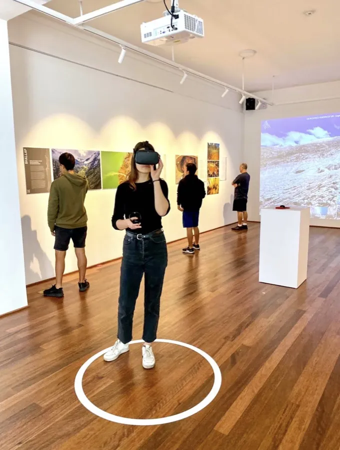
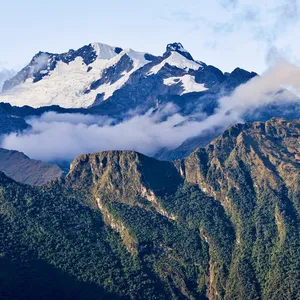
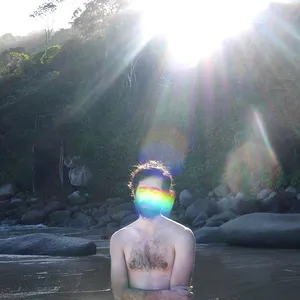
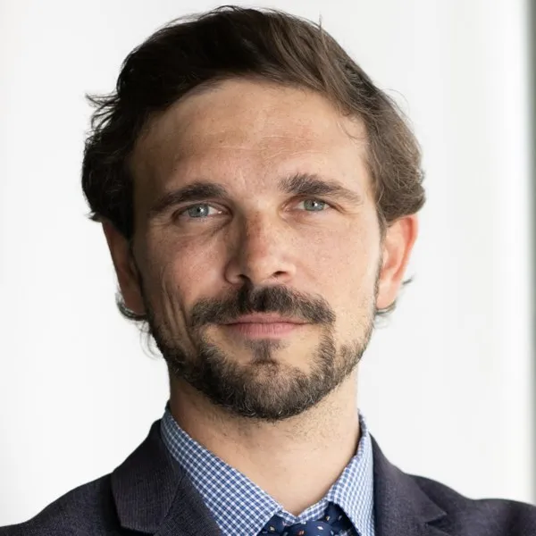
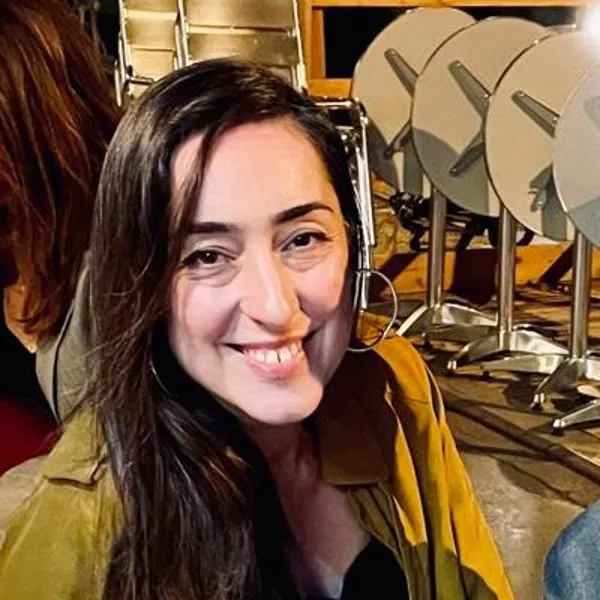
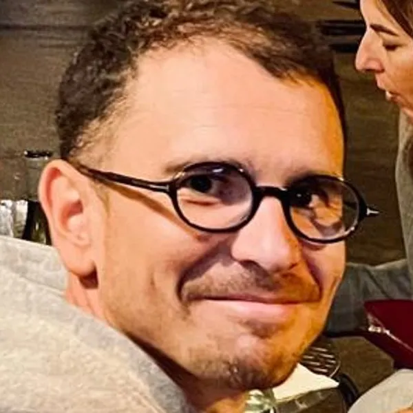
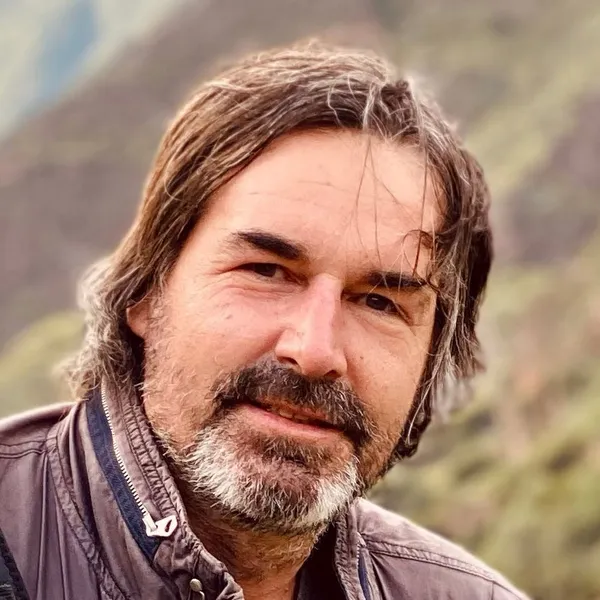

La canopée qui respire
Écrans à 270° et ventilation : la forêt bouge quand le vent passe.
Écrans 270° · ventilateurs directionnels · son spatialiséEntrez dans la vision
Vous portez une vision, un savoir, une collection. Nous la faisons exister autour du public, dans un dispositif qui s'adapte à vos lieux, à vos budgets et à vos visiteurs.
Du récit à la salle, sur mesure : technologies audiovisuelles innovantes, réalité virtuelle et scénographie immersive

Pièce maîtresse de l'exposition Héritages amazoniens : un voyage jusqu'aux tepuyes et aux peintures rupestres de l'Amazonie colombienne, un site interdit au public. Tournage avec les scientifiques, images aériennes, scènes 360° et photogrammétrie, trois murs de projection en triangle de 32 m × 3 m, des pictogrammes animés et un son spatialisé, présentés quatre mois et demi à Zurich.
Notre principe : connaître sans y aller.
Production générale THOT avec Nicolas Villaume · Coproduction Musée Rietberg et Un film à la patte (ARTE) · ICANH · ALIPH · Ambassade de Colombie en Suisse.


D'autres mondes à habiter

Le voyage en casque, scènes 360° et son 3D, présenté à Lima puis en Colombie.

Plus de 50 expositions internationales, du Smithsonian aux Nations Unies.

Bustarenga (2019), António, Lindo António (2015) : films montrés au Centre Pompidou, à Locarno, au Jeu de Paume.
L'innovation au cœur de notre action : six pistes que nous explorons, avec les solutions immersives qu'elles mobilisent
Écrans à 270° et ventilation : la forêt bouge quand le vent passe.
Écrans 270° · ventilateurs directionnels · son spatialiséUn plancher actif qui ondule, tremble ou résonne sous les pas.
Plancher vibrant · capteurs de pas · basses fréquencesUn rideau de brume sèche devient écran : on traverse l'image.
Brume sèche · vidéoprojection · aucun écran physiqueLa salle change de climat avec l'histoire : orage, averse ou neige.
Éclairs · vent · brumisation · neige artificielleAvec un nez, des diffuseurs qui racontent le lieu par l'odeur.
Diffuseurs pilotés · partenariat avec un nezLes visiteurs dessinent, la paroi s'anime et garde leurs traces.
Mur de plâtre · pigments naturels · captation et projectionPartager et explorer ensemble
Nos méthodes innovantes mobilisent particulièrement les enfants et les jeunes, au travers d'ateliers et de jeux pédagogiques
Celles et ceux qui fabriquent pour vous, une team d'innovateurs à votre service

Ingénieur en environnement, quinze ans de coopération internationale dans plus de vingt pays. Il imagine les expériences, coordonne la team et porte la relation avec les institutions.
Informaticien de formation, architecte numérique des installations : montage multi-écrans, chaîne 3D, synchronisation et diffusion.

Cinéaste et artiste vidéo, formée aux Arts Décoratifs et au Fresnoy. Elle a donné vie aux pictogrammes de Chiribiquete.

Mixeur, monteur son et designer sonore pour le cinéma et la télévision, spécialiste du multicanal. Il a conçu l'architecture sonore de la salle de Zurich.

Photographe primé, spécialiste des récits immersifs, plus de 50 expositions internationales. Co-auteur de Chiribiquete, il apporte ses images et son réseau d'explorateurs et de scientifiques.